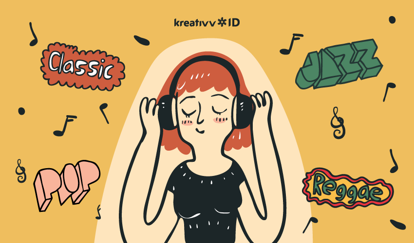
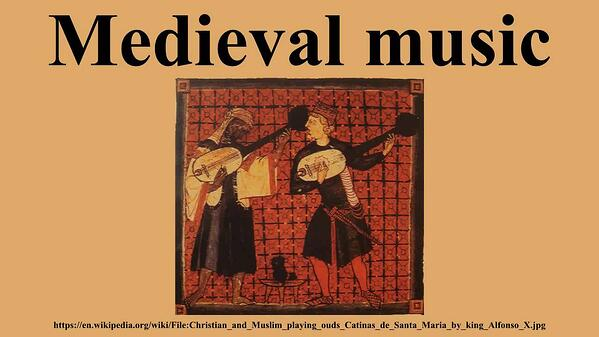
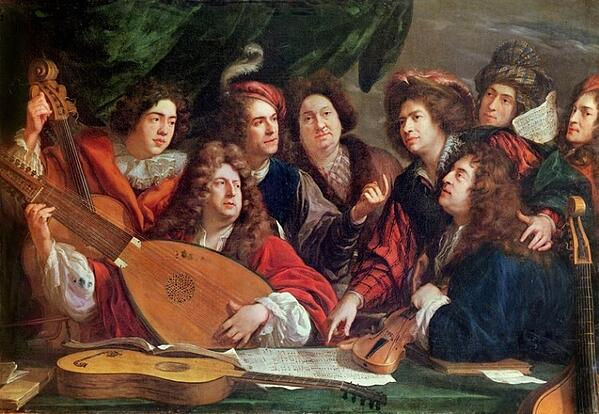
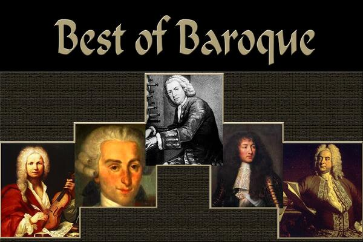
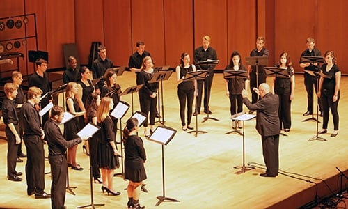

Perkembangan Musik dari Waktu ke Waktu

Guys, Ada yang suka mendengarkan musik? Bagi yang suka, coba deh play musik berikut ini.
Nah, Bagaimana? suka ga? Baguskan? Musik yang setiap hari kita dengarkan dan menjadi bagian dari kehidupan kita sehari-hari ternyata punya sejarahnya sendiri, lho. Lalu, Bagaimana ya sejarah musik ini bermula? eits, tapi sebelum itu, kamu sudah tahu belum apa defenisi dari musik? Menurut KBBI, musik dapat berarti nada atau irama yang disusun secara khusus, sehingga menghasilkan keharmonisan. Harmonis di sini mungkin akan berbeda, ya, tiap orang mendefinisikannya. Singkatnya mungkin gini, musik dapat mendorong kamu untuk merasakan 'sesuatu', baik itu rasa bersemangat atau bahkan perasaan galau.
Hari Musik Sedunia diperingati setiap tanggal 21 Juni. Hari peringatan ini juga dikenal dengan Fete de la Musique yang menandai dimulainya musik festival di Prancis pada 1982 berdasarkan ide dari menteri budaya Prancis, Jack Lang. Namun, terdapat teori lain tentang asal muasal peringatan Hari Musik Sedunia bahwa musisi Amerika bernama Joel Cohen yang ternyata memiliki ide tentang perayaan musik semalaman di Prancis untuk menandai dimulainya titik balik matahari di musim panas pada 1976.
1. Zaman Medieval (400-1400an)
Pada masa ini, di abad pertengahan, musik sangat dipengaruhi oleh kekuasaan gereja pada masa itu dan kemudian notasinya berkembang menjadi musical repertoire. Apa sih musical repertoire itu? Musical repertoire ialah kumpulan dari lembaran musik yang dimainkan secara individual, ensambel atau dimainkan dengan instrumen dan choir. Sayangnya, musik-musik dari masa ini rusak dan hanya tersisa bagian kecil saja. The Gregorian Chant merupakan salah satu dari lembaran musik terkenal di masa itu.
2. Zaman Renaissance (1400-1600an)
Pada masa ini, instrumen musik seperti piano atau organ sudah dikenal hingga muncul musik instrumen. Di kota Florence, Italia berkembang seni opera atau pembawaan musik dengan vokal diiringi instrumen musik. Pada masa ini juga, chords musik lebih fleksibel dan mudah untuk disesuaikan dengan gaya musisi itu sendiri.
3. Zaman Barok (1600-1700an)
Pada periode ini, jenis musik instrumen lebih dikenal secara umum. Para komposer musik memberikan improvisasi ke dalam hasil karyanya. Gaya bermusik para musisi lebih beragam. Terdapat aliran musik Rokoko pada periode ini. Perbedaan musik Barok dan Rokoko ialah musik Barok memakai Ornamentik yang membolehkan komposer memberikan improvisasi spontan pada karyanya, sedangkan musik Rokoko memiliki komposisi musik yang dekoratif, tapi tidak terlalu kompleks.
4. Zaman Klasik (1700-1910an)

Klasik era (era klasik Barat) berhubungan erat dengan harmoni. Beberapa hasil karya dari masa ini merupakan hasil karya yang tidak dapat dibandingkan dengan karya apa pun pada masa sebelumnya, seperti karya Beethoven berjudul Fifth Symphony. Haydn dan Mozart adalah musisi yang menjadi 'kunci' di era ini. Di akhir era Klasik, musisi menggubah musik dengan tambahan instrumen selain piano, seperti klarinet, trombon, dan timpani.
5. Zaman Romantik (1810-1900an)

Pada era ini, karya-karya pada era romantik memiliki komposisi perasaan emosi yang kuat dan makna yang dalam. Dari karya Schumann sampai Wagner, komposisi menjadi lebih kompleks sebagai simbol dari beberapa karya yang dramatis seperti Siegfried karya milik Wagner. Tidak lupa, Hector Berlioz dengan karyanya yang diberi judul "Symphonie Fantastique".
6. Zaman Modern/Kontemporer (1900-2000an)

Setelah penemuan radio, musik menjadi lebih sering terdengar oleh kita, begitu juga dengan
televisi yang
turut memengaruhi era ini,
membawa musik menjadi produk dari budaya massa. Musik juga berevolusi hingga menciptakan
berbagai jenis atau
aliran musik,
tempo atau bahkan temponya.
Kalau dibaca ulang dari atas, nih, kamu sadar kah, kalau sejarah musik condong mengarah ke
dunia
Barat?
Nyatanya, musik sejak dulu
sudah ada di berbagai belahan dunia. Di daratan Tiongkok, persisnya di provinsi Hubei,
ditemukan
alat musik
kuno yang diperkirakan
telah ada sejak tahun 433 SM. Selain itu, ditemukan pula alat musik seruling yang
diperkirakan
berasal dari
era Neolitikum.
Nah! Segitu saja dulu info tentang sejarah musik. Ngomongin tentang musik saja bisa tambah pengetahuan kamu, ya. Kamu mau 'kan punya banyak pengetahuan dan ilmu? yuk, Baca lagi artikel menarik lainnya di "Yuk, Baca!" Makin sering membaca, makin banyak ilmunya.